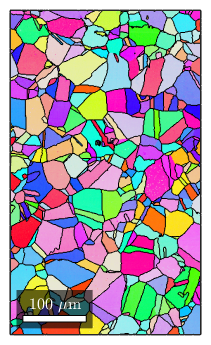
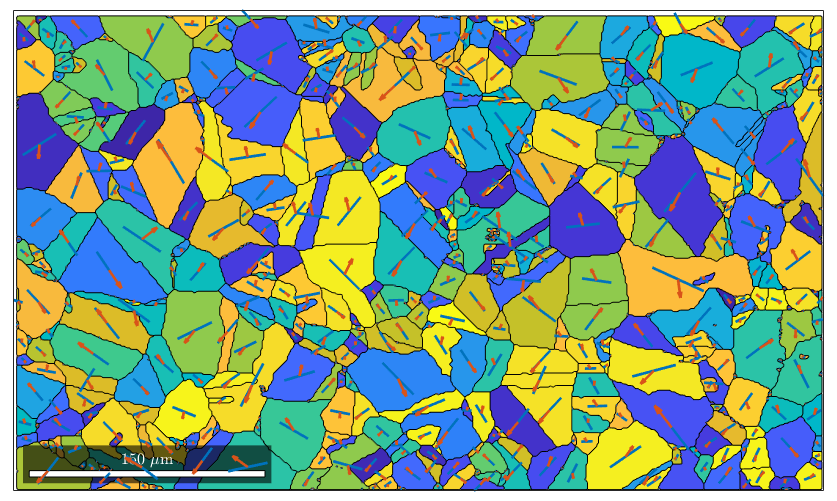
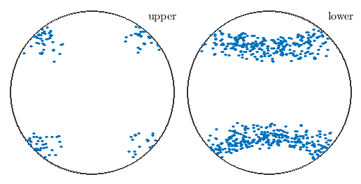
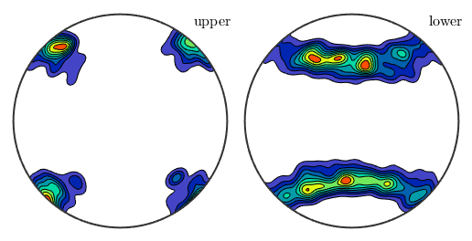
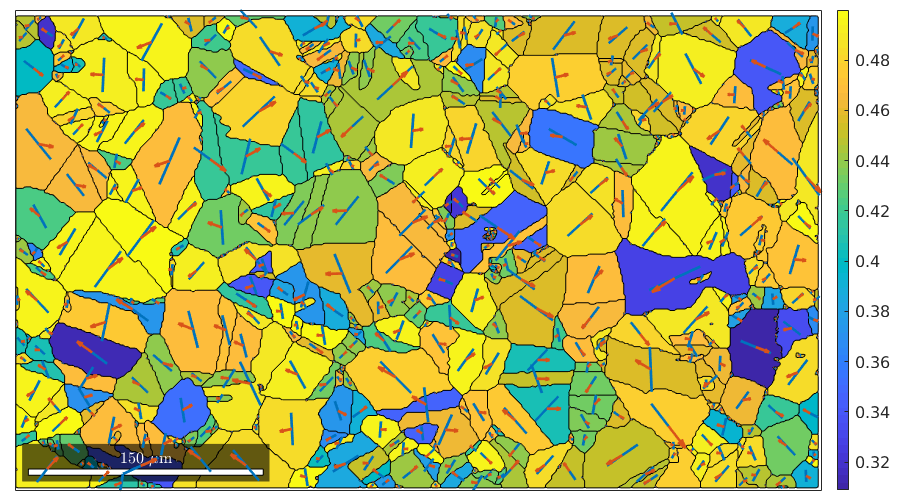
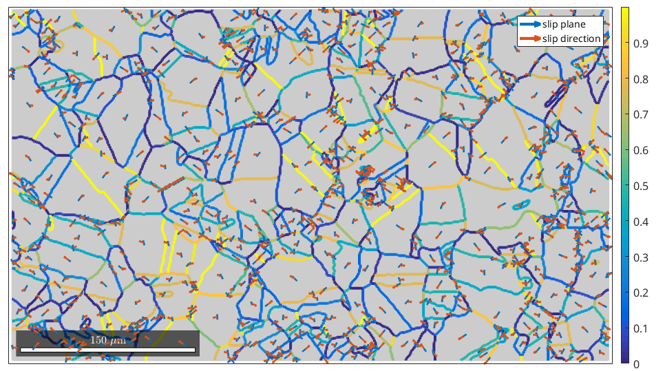
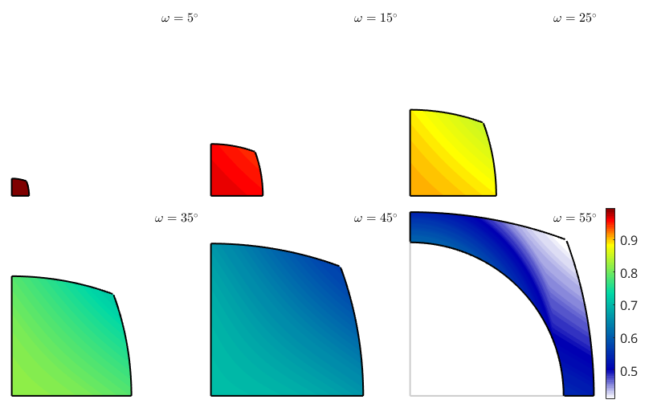

How to analyse slip transmission at grain boundaries
| On this page ... |
| Import Titanium data |
| Taylor model |
| Resolved shear stress |
| Compatibility of slip systems |
| Plot m' in misorientation space |
From Mercier D. - MTEX 2016 Workshop - TU Chemnitz (Germany) Calculation and plot on GBs of m' parameter Dataset from Mercier D. - cp-Ti (alpha phase - hcp)
mtexdata csl % compute grains [grains, ebsd.grainId] = calcGrains(ebsd('indexed')); % make them a bit nicer grains = smooth(grains); % extract inner phase grain boundaries gB = grains.boundary('indexed'); plot(ebsd,ebsd.orientations) hold on plot(grains.boundary) hold off
% consider Basal slip sS = slipSystem.fcc(ebsd.CS) % and all symmetrically equivalent variants sS = sS.symmetrise; % q = 0.5; eps = tensor(diag([-q 1 -(1-q)]),'name','strain'); [M,b,ori] = calcTaylor(inv(grains.meanOrientation).*eps,sS);
sS = slipSystem mineral: iron (m-3m) CRSS: 1 size: 1 x 1 u v w | h k l 0 1 -1 1 1 1
% find the maximum
[~,id] = max(b,[],2);The variable id contains now for each grain the id of the slip system with the largest Schmidt factor. In order to visualize it we first rotate for each grain the slip system with largest Schmid factor in specimen coordinates
sSGrain = grains.meanOrientation .* sS(id) % and plot then the plance normal and the Burgers vectors into the centers % of the grains plot(grains,M) largeGrains = grains(grains.grainSize > 10) hold on quiver(grains,cross(sSGrain.n,zvector),'displayName','slip plane') hold on quiver(grains,sSGrain.b,'displayName','slip direction') hold off
sSGrain = slipSystem
CRSS: 1
size: 885 x 1
largeGrains = grain2d
Phase Grains Pixels Mineral Symmetry Crystal reference frame
-1 442 153261 iron m-3m
boundary segments: 21799
triple points: 1444
Properties: GOS, meanRotation
 We may also analyse the distribution of the slip directions in a pole figure plot
plot(sSGrain.b)
The same as a contour plot. We see a clear trend towards east.
plot(sSGrain.b,'contourf')
We could do the same as above with a more general stress tensor. However, the result is a bit different. TODO: why do the directions do not point towards east???
% more general syntax for the same stress tensor sigma = stressTensor.uniaxial(xvector); % compute Schmid factor for all slip systems SF = sS.SchmidFactor(inv(grains.meanOrientation) * sigma); % find the maximum Schmidt factor [SF,id] = max(SF,[],2); % plot the Schmid factor plot(grains,SF) mtexColorbar % active slip system in specimen coordinates sSGrain = grains.meanOrientation .* sS(id) % and plot then the plance normal and the Burgers vectors into the centers % of the grains hold on quiver(grains,cross(sSGrain.n,zvector),'displayName','slip plane') hold on quiver(grains,sSGrain.b,'displayName','slip direction') hold off
e =
PropertyEvent with properties:
AffectedObject: [1×1 ColorBar]
Source: [1×1 matlab.graphics.internal.GraphicsMetaProperty]
EventName: 'PostSet'
sSGrain = slipSystem
CRSS: 1
size: 885 x 1

Next we want to analyze, how much geometricaly compatible the slip systems with highest Schmid factor are at the grain boundaries
% some background plot(grains,'FaceColor',0.8*[1 1 1],'figSize','large') % compute m' id = gB.grainId; mP = mPrime(sSGrain(id(:,1)),sSGrain(id(:,2))); % plot m' along the grain boundaries hold on plot(gB,mP,'linewidth',3) mtexColorbar % and plot then the plance normal and the Burgers vectors into the centers % of the grains hold on quiver(grains,cross(sSGrain.n,zvector),'displayName','slip plane') hold on quiver(grains,sSGrain.b,'displayName','slip direction') hold off
e =
PropertyEvent with properties:
AffectedObject: [1×1 ColorBar]
Source: [1×1 matlab.graphics.internal.GraphicsMetaProperty]
EventName: 'PostSet'

Since m' depends ony the misorientation only why may plot it directly in misorientation space
% set up an axis angle plot sP = axisAngleSections(sS.CS,sS.CS) % generate a grid of misorientations moriGrid = sP.makeGrid; % compute mPrime for all misorientations sS = slipSystem.basal(ebsd.CS); mP = max(mPrime(sS,moriGrid*sS.symmetrise),[],2); % plot mPrime sP.plot(mP,'smooth') mtexColorbar
sP =
axisAngleSections with properties:
angles: [0.0873 0.2618 0.4363 0.6109 0.7854 0.9599]
axesSectors: {1×6 cell}
jointCS: [24×1 crystalSymmetry]
oR: [1×1 orientationRegion]
volumeScaling: 1
CS1: [24×1 crystalSymmetry]
CS2: [24×1 crystalSymmetry]
tol: 0.0873
plotGrid: []
gridSize: []
CS: [24×1 crystalSymmetry]
SS: [24×1 crystalSymmetry]
e =
PropertyEvent with properties:
AffectedObject: [1×1 ColorBar]
Source: [1×1 matlab.graphics.internal.GraphicsMetaProperty]
EventName: 'PostSet'

| DocHelp 0.1 beta |